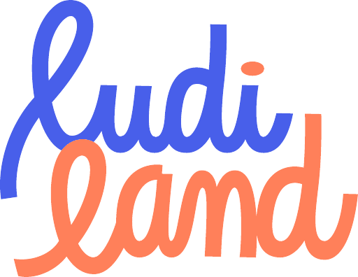
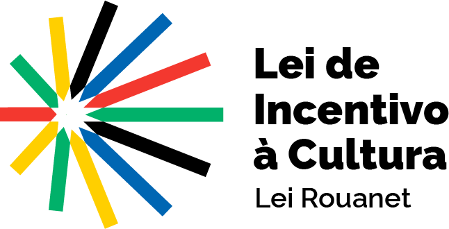
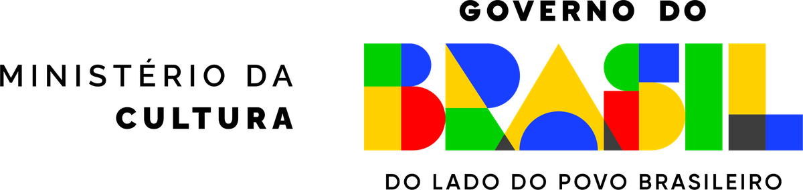
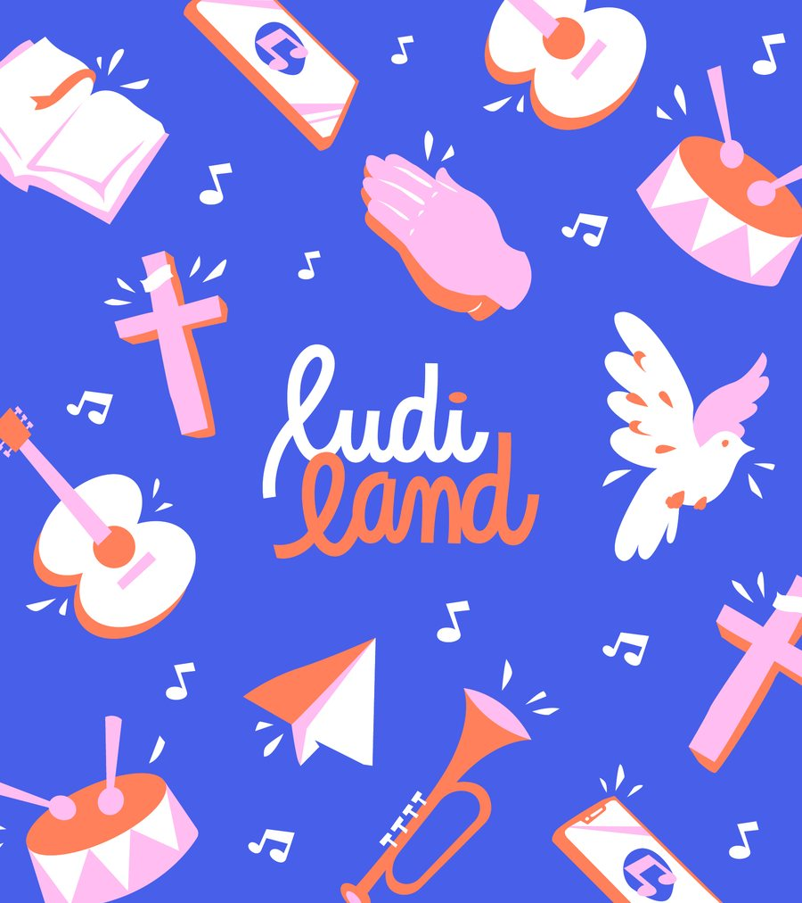
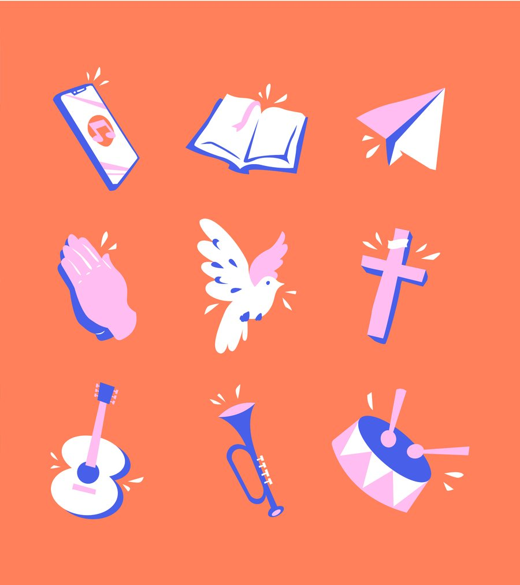
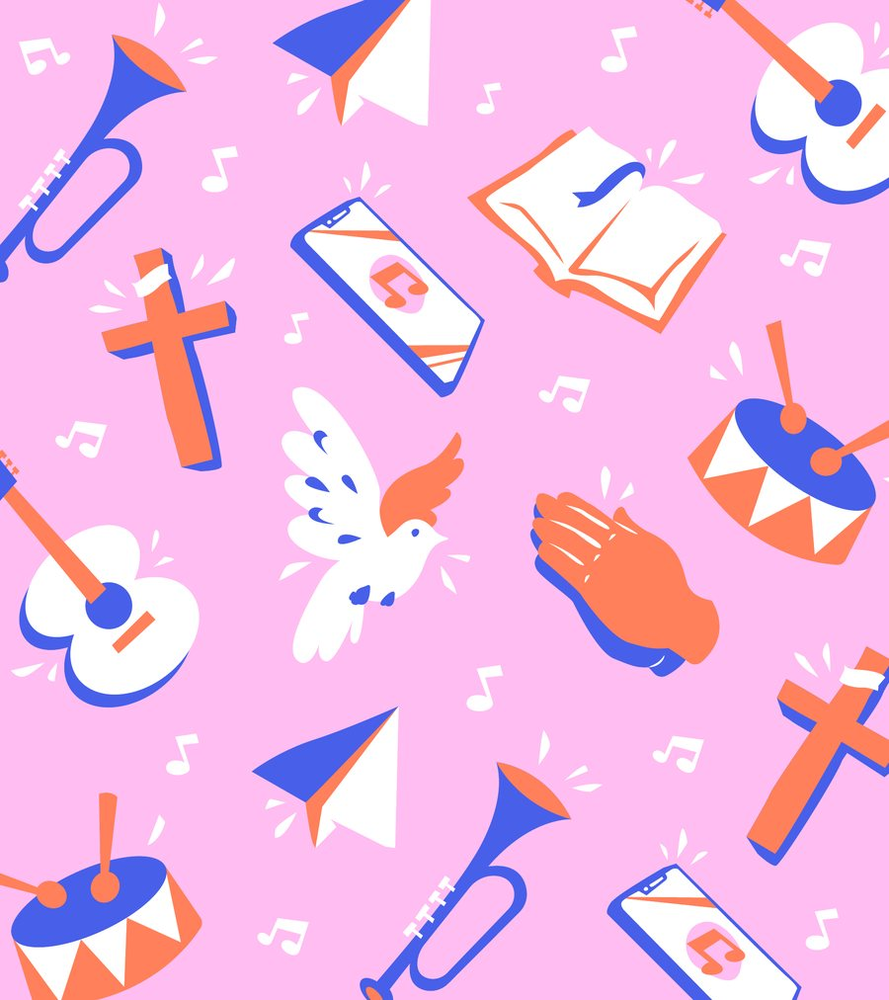

Proposta exclusiva para o REDECOMPRAS
Uma parceria que preserva histórias e ajuda a criar outras.
O REDECOMPRAS é convidado a patrocinar o documentário De nada em nada, tudo. A proposta reúne contrapartidas institucionais e uma contrapartida especial: a produção de uma temporada de animação para o LudiLand.
Um filme sobre a poesia que o Nordeste guarda de cor.
De nada em nada, tudo. registra repentistas, cantadores, cordelistas, pesquisadores e as novas gerações que levam a poesia nordestina adiante.
O convite é para que o REDECOMPRAS seja patrocinador do filme pela Lei Rouanet. Em troca, a Bourbon Films propõe um pacote de contrapartidas pensado para o REDECOMPRAS, com destaque para o LudiLand.
- Formato
- Documentário
- Base
- Campina Grande, PB
- Território
- Paraíba e Sertão do Pajeú
- Enquadramento
- Lei Rouanet, PRONAC 258413
O que uma geração canta, a seguinte aprende.
- O mesmo chãoO REDECOMPRAS faz parte do dia a dia de Campina Grande, cidade-base do filme.
- Música que ensinaRepente, cordel e cantoria ensinam com rima e melodia. O LudiLand também ensina com música.
- Memória e imaginaçãoO filme guarda o que veio antes. O LudiLand cria histórias para crianças e famílias.
Um patrocínio, um pacote de contrapartidas.
Institucionais
- Marca no bloco de patrocínio dos créditos e das peças de divulgação do filme
- Espaço de patrocinador no site do filme
- Relatórios de andamento e relatório final
Relacionamento
- Sessão do filme para a equipe e convidados do REDECOMPRAS
- Presença em ações de divulgação combinadas
Contrapartidas propostas, sujeitas às regras da Lei Rouanet e ao acordo final. A temporada LudiLand faz parte desta proposta, mas não é paga com os recursos incentivados do filme: a forma de contratação, faturamento e tributação será definida com o jurídico e a contabilidade das duas partes.

Patrocínio
Realização

Uma temporada de animação para o LudiLand.
O LudiLand já tem voz própria: lettering desenhado à mão, azul, coral e rosa, ícones de música e fé, canções para crianças e famílias. A Bourbon Films propõe colocar esse universo em movimento numa temporada animada, partindo do que já foi criado, sem redesenhar a identidade.

- Direção audiovisualLinguagem, ritmo e unidade da temporada, em diálogo com quem criou o LudiLand.
- AnimaçãoLettering, ícones, padrões e personagens existentes ganham movimento.
- ProduçãoEquipe, cronograma e acompanhamento de cada etapa.
- FinalizaçãoMontagem, cor, mixagem e entrega nos formatos combinados.


A definir juntos
Número de episódios, duração, roteiros, vozes e música, cronograma, direitos de uso, orçamento e forma de contratação.
Identidade visual LudiLand reproduzida a partir do material de referência fornecido.
Do interesse ao acordo.
- InteresseAlinhar o interesse no patrocínio e o aporte pretendido.
- Escopo LudiLandDefinir a temporada proposta: formato, entregas e direitos.
- ValidaçãoRevisar a estrutura jurídica, financeira e contratual.
- AcordoFormalizar o que for aprovado pelas duas partes.
- InícioComeçar as atividades combinadas depois da autorização.
Aporte a definir em conjunto. Nada nesta página confirma patrocínio ou contratação.
Como funciona o incentivo fiscal
Empresas tributadas pelo Lucro Real podem destinar parte do IRPJ devido a projetos culturais aprovados pela Lei Rouanet. O enquadramento, o limite disponível e o período de aproveitamento devem ser confirmados pela contabilidade da empresa.
O incentivo vale só para o patrocínio ao projeto cultural aprovado. A produção da temporada LudiLand tem tratamento próprio, a ser definido na validação.
Referência: Lei nº 8.313/1991 (Lei Rouanet) e Instrução Normativa MinC nº 29/2026.
Vamos conversar?
Raul, Bourbon Films. WhatsApp (83) 99868-3878. bourbonfilms@gmail.com.
O botão abre uma conversa com mensagem sugerida. Nada é enviado sem a sua confirmação.